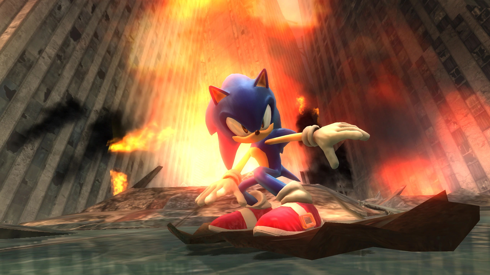

"Crisis City -The Flame-Skyscraper-Whirlwind-Tornado" úr Sonic the Hedgehog (2006)
Í fyrsta sinn sem Tomoya fékk að vera sound director var þegar hann að samdi fyrir Sonic the Hedgehog (2006).
Í þetta sinn samdi Tomoya miklu fleiri lög og fékk að njóta sín miklu betur en í Sonic Adventure 2, þar sem hann var mjög takmarkaður að mínu mati.

Smá um leikinn...
Sonic the Hedgehog (2006), sem er alls ekki sami leikurinn og Sonic the Hedgehog (1991), var gefinn út á fimtán ára afmæli Sonic leikjaseríunar.
Sonic the Hedgehog (2006), oft kallað Sonic 06, var mjög metnaðarfullur leikur og stútfullur af djörfum hugmyndum.
Aftur á móti vildi SEGA að leikurinn kæmi út á 15 ára afmæli Sonics þegar leikurinn var barasta alls ekki tilbúinn. Þar að leiðandi varð leikurinn dálítið skrýtinn.
Sagan var mjög furðuleg og gameplayið mjög glitchy. Loading screens gátu verið alveg rosalega löng.
Hvenær spilar lagið?
Crisis city er borð sem gerist í myrkri framtíð þar sem eldguðinn Iblis hefur lagt heiminn í eyði og aðeins örfáar manneskjur (eða dýr) lifa enn.
Hægt er að spila sem Silver the Hedgehog og vinkona hans Blaze the Cat sem búa í borginni. Aftur á móti spilar maður líka sem Sonic þó að hann sé ekki úr framtíðinni, þökk sé tímaflakki.
Í Crisis City geysa miklar náttúruhamfarir. Til að byrja með er hraun, kvika og eldur út um allt, en svo má ekki gleyma öllun eldskrýmslunum auk Iblis sjálfum.
Síðast en ekki sýst er brjálaður hvirfilvindur sem feykir bílum og grjóti út um allt. Ekki beint staður sem ég myndi vilja búa á!
Huglæg greining